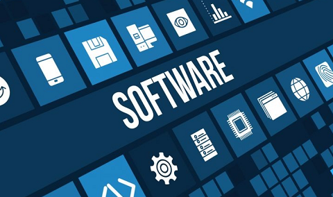

¿QUE ES EL SOFTWARE?
El software es el conjunto de programas, instrucciones, reglas y datos que permiten que un dispositivo electrónico funcione. Es un componente intangible de los dispositivos, como computadoras, tablets o teléfonos móviles.
El software es el conjunto de programas, instrucciones, reglas y datos que permiten que un dispositivo electrónico funcione. Es un componente intangible de los dispositivos, como computadoras, tablets o teléfonos móviles.

El desarrollo de software es el proceso de crear y diseñar programas o aplicaciones informáticas mediante la escritura de código, diseño, pruebas y mantenimiento. Este proceso implica una serie de pasos e instrucciones que los desarrolladores siguen para crear software funcional y de alta calidad.

Un error de software es un problema o fallo en un programa o aplicación de software que provoca un comportamiento no deseado o incorrecto. Pueden ocurrir por diversos motivos, como errores de programación, problemas de diseño, errores de lógica, incompatibilidades, entre otros.
Cuando un programa tiene un error de software, puede comportarse de manera inesperada, no hacer lo que se supone que debería hacer, o incluso causar fallos en el sistema.
Los errores de software pueden ser leves y tener poco o ningún impacto en el usuario, o pueden ser graves y causar pérdida de datos, interrupción del servicio, daño a la reputación de la empresa o incluso poner en riesgo la seguridad del sistema.